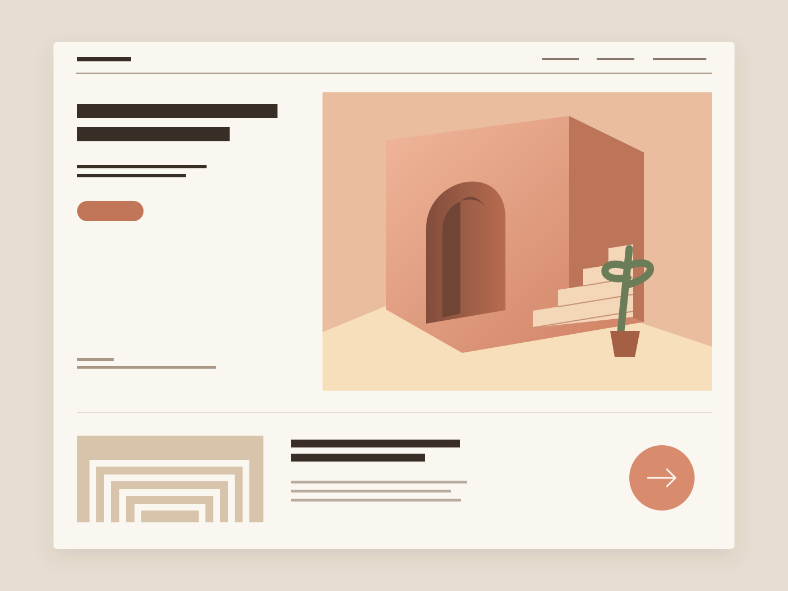

아트리움 노트
공간의 이야기를 읽는 새로운 순서
관점 · 디자인 · 기술
독립적인 생각, 연결되는 경험우리가 생각하는 디자인
빠르게 스쳐 가는 화면 속에서도 목적은 또렷해야 합니다. 나루폼은 브랜드가 가진 결을 읽고, 정보와 움직임을 정리해 사람에게 자연스럽게 닿는 형태를 찾습니다.
우리의 관점 더 읽기무엇을, 누구에게 전할지 먼저 묻습니다.
내용과 화면, 다음 행동을 함께 설계합니다.
작은 동작까지 목적에 맞게 구현합니다.
자체 콘셉트 프로젝트
함께 하는 일
무엇을 만들기 전에, 왜 필요한지부터 묻습니다. 브랜드가 전할 이야기와 사용자의 목적을 한 장의 구조로 정리합니다.
읽는 순서와 누르는 순간 사이를 설계합니다. 콘텐츠를 쉽게 찾고 자연스럽게 다음 행동으로 이어지는 웹 경험을 만듭니다.
움직임은 시선을 빼앗는 장식보다 이해를 돕는 단서여야 합니다. 매체와 기기에 맞는 속도와 깊이를 실험합니다.
완료된 화면 다음의 일상도 생각합니다. 변경하기 쉬운 구성과 명확한 기록을 남겨 다음 작업이 이어질 수 있게 합니다.
과정에 남긴 기록
다음 장면을 함께